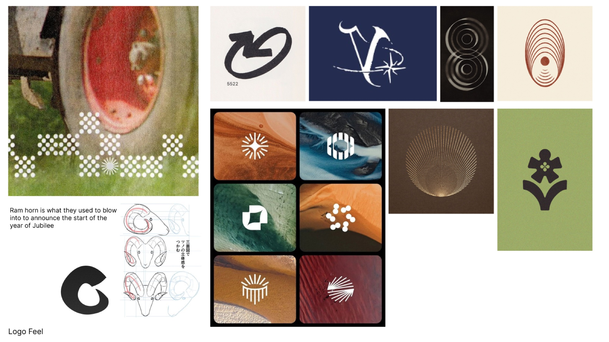
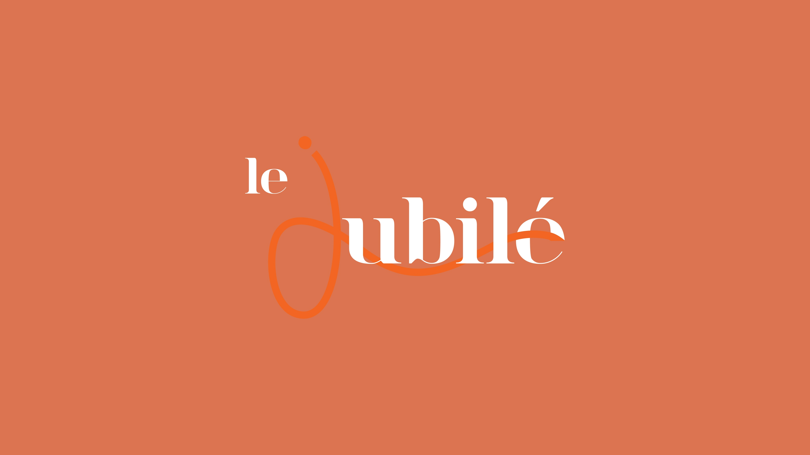
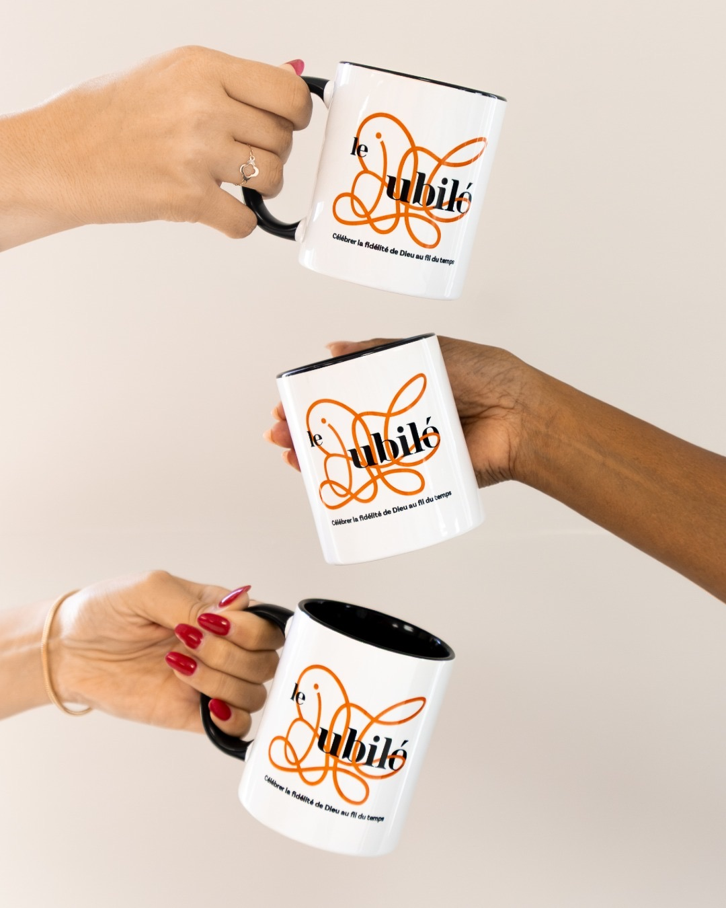
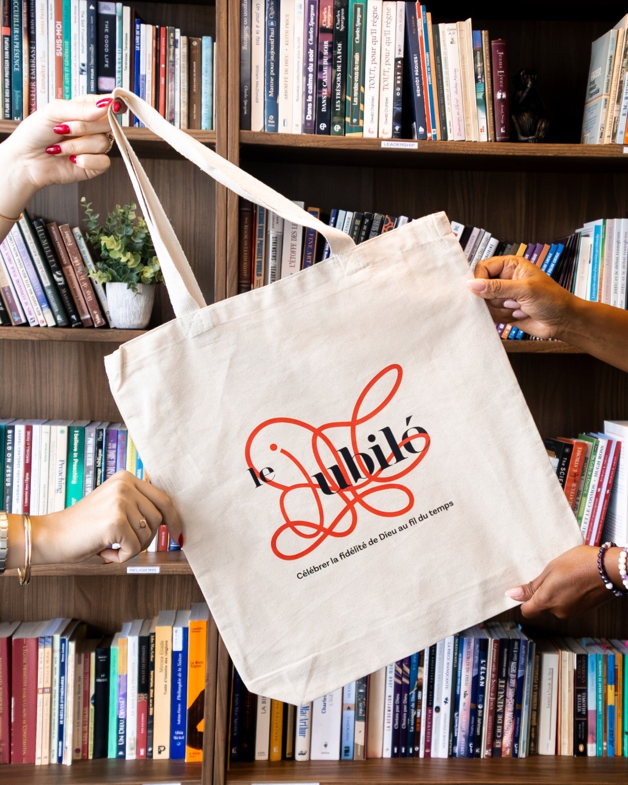
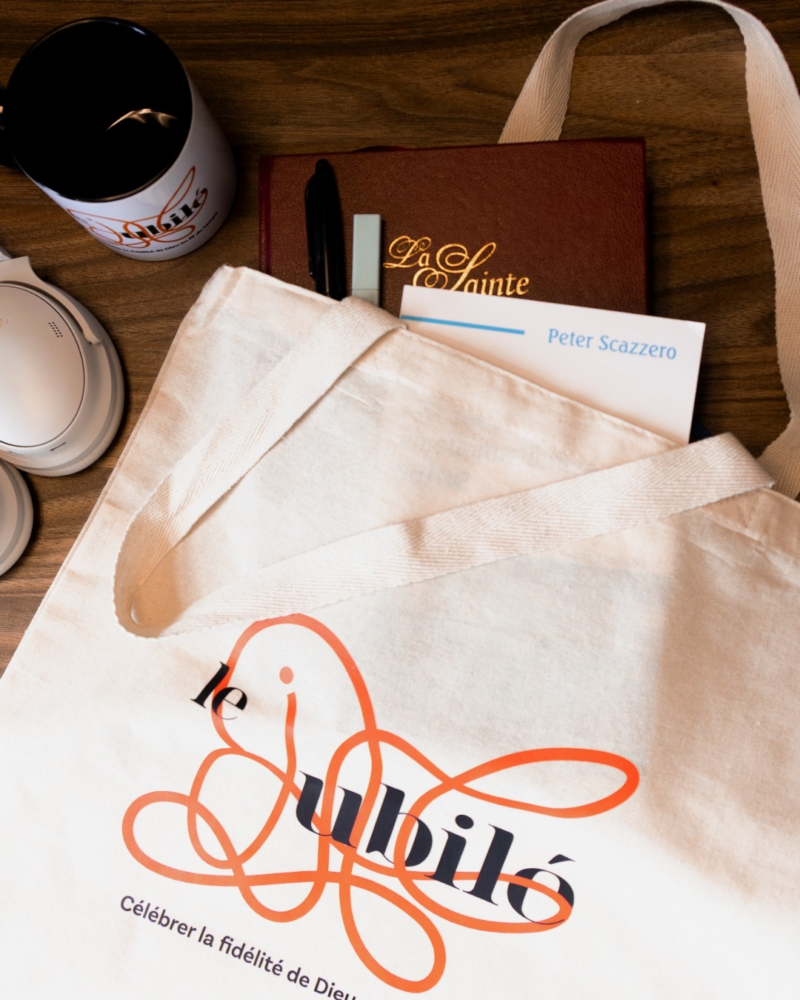
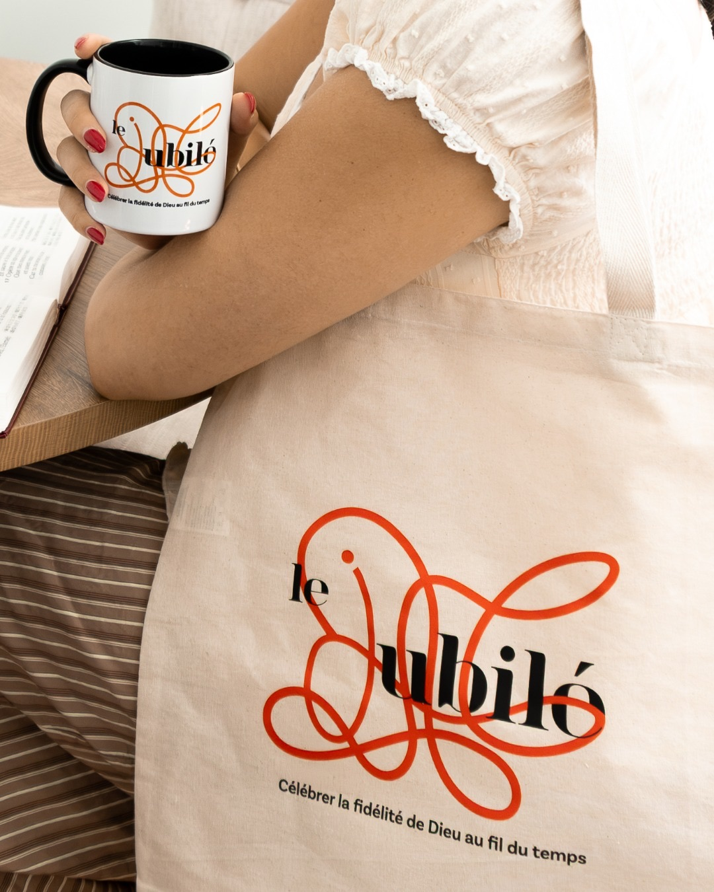

Cliquer pour regarder
Marketing — Design graphique
(2/22)
Pour les 50 ans de l'Église Le Portail : une identité, une vidéo d'ouverture et des produits dérivés, réunis par un seul trait.
Dans la Bible, le jubilé est une année de célébration annoncée au son du shofar, une corne de bélier. Pour ses 50 ans, l'Église Le Portail voulait une année complète de rassemblements sur ses cinq sites.
J'ai créé l'identité du Jubilé, puis je l'ai déclinée en vidéo pour l'introduction du banquet des 50 ans, et en tasses et en sacs vendus dans chacun des sites.
Un documentaire sur le Jubilé s'en vient.
(Processus)
Les moments clés, de la corne au produit fini.
Le « J » de Jubilé est une réinterprétation visuelle du shofar : un seul trait qui en reprend la courbe.


La vidéo commence dans une pièce vide : on sort un vieux projecteur à diapositives d'une boîte, on l'allume, et les archives de l'Église défilent. Les photos glissent ensuite dans des cadres aux couleurs du Jubilé, jusqu'à l'Église d'aujourd'hui et au logo.
Des tasses et des sacs en édition limitée, vendus dans les cinq sites. Le trait orange se déploie sur tout l'objet, avec la phrase « Célébrer la fidélité de Dieu au fil du temps ».



